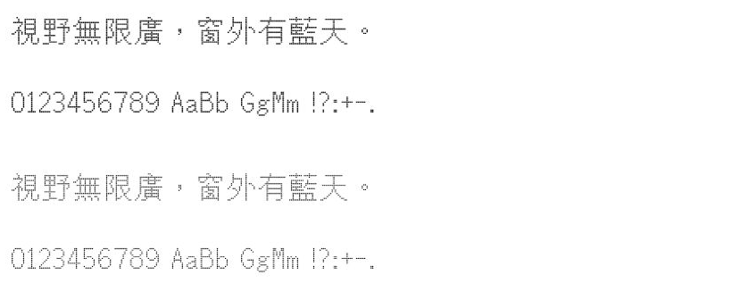

字样资料 / 蒙纳点阵
蒙纳点阵 · 方点／圆点
资料图，不作逐字字库覆盖验证。 · 字高未核定 · 繁体
原始资料图 · 官方试字截图

资料图不代表原生字号，不能按像素尺寸比较。
来源与字样信息
- 家族
- 蒙纳点阵
- 资料类型
- 官方试字截图
- 核验边界
- 上半为方点、下半为圆点，均为官网35px显示截图；原字框未核，不适合与原像素字样按字号比较。
- 字符范围
- 繁体
- 样本文字
- 視野無限廣，窗外有藍天。
- 拉丁样文
- 0123456789 AaBb GgMm !?:+-.
- 覆盖说明
- 资料图，不作逐字字库覆盖验证。
- 缺字
- 资料图不作逐字覆盖验证
- 风格
- 参考资料
- 用途
- 研究参考
- 字形来源
- Monotype HK Design的像素设计参考。同一汉字结构的方点与圆点表现合并一条，不称两个独立原生字库。
- 授权状态
- 以来源及权利人许可为准
- 许可说明
- 权利归原字体或资料权利人。仅展示固定研究字样和来源，不提供字体文件；公开可见不等于已取得使用或再分发授权。
- 说明
- 上半为方点、下半为圆点，均为官网35px显示截图；原字框未核，不适合与原像素字样按字号比较。
- 来源
- 查看原始资料
相关来源与合并说明
蒙纳繁方点阵
Monotype官方访谈将方点阵描述为pixel-based structure；尚未核实字框格数或字体内置bitmap表。
查看相关来源蒙纳繁圆点阵
Monotype官方访谈将方点阵描述为pixel-based structure；尚未核实字框格数或字体内置bitmap表。
查看相关来源仅展示固定字样，不提供字体文件。预览不授予字体使用许可；样文覆盖不等于完整字库覆盖，实际使用前请核实来源项目的适用授权。